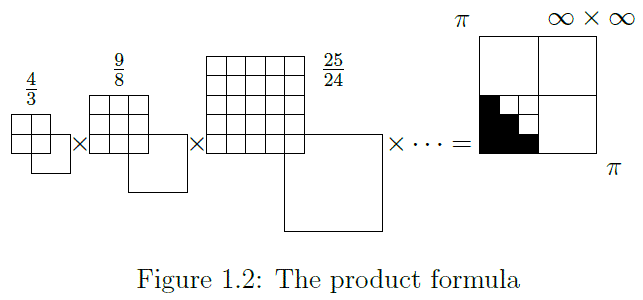

Working notebook — speculative, unfinished, not peer-reviewed.
The focus in this document is not on the classic Riemann zeta function involving Complex Analysis. However, the results provide a solution to the distribution of the zeta zero's and consequently an answer to the Riemann hypothesis.
The problem that superseded the Riemann zeta function, ‘the Basel Problem’, is named after the Swiss city.At the university of Basel the Bernoulli brothers successively served as professor of mathematics (Jakob, 1687-1705, Johann, 1705-1748).
Jakob Bernoulli stated the problem: Find a closed form for the infinite series:
This is the sum of the reciprocal squares of the natural numbers and is closely related to the harmonic series for which the Bernoulli brothers found proof for the divergence of the series.
The Basel problem, as sum of the reciprocal squares of the natural numbers, is the foundation for what later became inquiry in the distribution of the prime numbers among the natural numbers. After 330 years there are still open questions to be answered.
Why the Basel problem
In essence this paper starts in 1735, the year that Leonhard Euler in st. Petersburg found the answer to the Basel problem, he found the closed (exact) form surprisingly to add up to an irrational number $\frac{\pi^{2}}{6}$.
The infinite sum of the shaded squares adds up to $\frac{1}{6}$ of $\pi^{2}$. The closed form $\frac{\pi^{2}}{6}$ indicates that the rational squares add up to a fraction of an irrational surface with sides $\pi$.
It is in precisely this mapping that an alternative pathway for investigation presented itself.
The product formula
The zeta function for s=2 can also be stated as product over the primes:
This can be represented as a product of square area ratios.

Figure 1.02 The product formula
The infinite product of the factors equals $\frac{1}{6}\thinspace of\thinspace \pi^{2}$. E.g. The ratio $\frac{16}{15}$ between $\frac{9}{8}$ and $\frac{25}{24}$ does not appear because 4 is not a prime number. The rational quotients multiply out to an irrational square with sides $\pi$.
The sum of the reciprocal squares of the natural numbers equals a infinite product of which the terms iterate over all prime numbers. The geometric projection of the sum and product formula shows the evolution of the formula to the result $\frac{\pi^{2}}{6}$ as a function of area.
Rational and Real numbers
The rationals are a dense subset of the real numbers; every real number has rational numbers arbitrarily close to it. A related property is that rational numbers are the only numbers with finite expansions as regular continued fractions.
—Wikipedia, Real numbers and topological properties
A sum or product of Rational quantities resulting in a Real number value. Is the result $\zeta\left(2\right)=\frac{\pi^{2}}{6}$ a Real number or an infinitely close rational approximation?